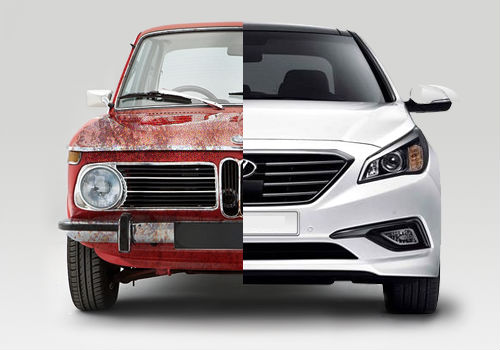

Economical vs. Fun Cars: Finding Your Balance

When choosing a vehicle, many drivers find themselves at a crossroads: prioritize saving money and fuel, or indulge in the thrill of driving. Both economical and "fun" cars offer distinct advantages and disadvantages. Let's explore them to help you decide what's right for you.
Economical Cars: Pros and Cons
Pros of Economical Cars:
- Lower Running Costs: This is the most significant advantage. Economical cars, especially hybrids and EVs, drastically reduce your spending on fuel or electricity.
- Reduced Maintenance: Often, simpler designs and fewer complex parts (especially in EVs) lead to lower maintenance and repair bills over the vehicle's lifetime.
- Environmentally Friendly: With better fuel efficiency and often lower emissions, economical cars contribute to a smaller carbon footprint.
- Affordable Purchase Price: Many gasoline-powered economical cars come with a lower initial price tag, making them accessible to a wider range of budgets.
- Practicality: Economical cars are typically designed for daily commuting and city driving, offering practical features and ease of parking.
- Better Resale Value: Due to ongoing demand for fuel efficiency, many economical models hold their value well over time.
Cons of Economical Cars:
- Less Power/Acceleration: While improving, some economical cars may not offer the exhilarating acceleration or top-end speed of performance-oriented vehicles.
- "Plain" Driving Experience: The focus on efficiency can sometimes lead to a less engaging or "fun" driving experience for enthusiasts.
- Limited Features in Base Models: To keep costs low, base models of economical cars might lack certain luxury or performance features.
- Range Anxiety (for some EVs): While improving, the perceived or actual limited range and charging infrastructure can be a concern for long-distance travel in some EVs.
Fun Cars: Pros and Cons
Pros of Fun Cars:
- Exhilarating Performance: High horsepower, quick acceleration, and responsive handling provide an exciting driving experience.
- Engaging Driving Dynamics: Often built with enthusiast drivers in mind, offering precise steering, strong braking, and a connected feel to the road.
- Status and Aesthetics: Many "fun" cars come with attractive designs, premium interiors, and a sense of prestige.
- Advanced Technology: Performance cars often showcase cutting-edge automotive technology, from advanced infotainment to sophisticated suspension systems.
- Emotional Connection: For many, a fun car is more than just transportation; it's a passion and a source of joy.
Cons of Fun Cars:
- High Running Costs: Typically have much lower fuel efficiency, leading to higher gas bills. They also often require premium fuel.
- Increased Maintenance and Insurance: Performance components can be expensive to repair or replace, and insurance premiums are usually significantly higher.
- Higher Purchase Price: "Fun" cars generally come with a considerably higher upfront cost.
- Less Practical: Often sacrifice practicality for performance, with limited cargo space, stiff rides, and sometimes less comfortable seating for daily use.
- Higher Environmental Impact: Generally produce more emissions and consume more resources than their economical counterparts.
- Faster Depreciation: While some classic performance cars appreciate, many modern "fun" cars can depreciate quickly.